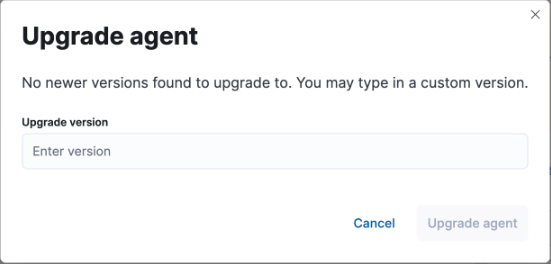

Upgrade Fleet-managed Elastic Agentsedit
Want to upgrade a standalone agent instead? See Upgrade standalone Elastic Agents.
With Fleet upgrade capabilities, you can view and select agents that are out of date, and trigger selected agents to download, install, and run the new version. You can trigger upgrades to happen immediately, or specify a maintenance window during which the upgrades will occur. If your Elastic Stack subscription level supports it, you can schedule upgrades to occur at a specific date and time.
In most failure cases the Elastic Agent may retry an upgrade after a short wait. The wait durations between retries are: 1m, 5m, 10m, 15m, 30m, and 1h. During this time, the Elastic Agent may show up as "retrying" in the Fleet UI. As well, if agent upgrades have been detected to have stalled, you can restart the upgrade process for a single agent or in bulk for multiple agents.
This approach simplifies the process of keeping your agents up to date. It also saves you time because you don’t need third-party tools or processes to manage upgrades.
By default, Elastic Agents require internet access to perform binary upgrades from Fleet. However, you can host your own artifacts repository and configure Elastic Agents to download binaries from it. For more information, refer to Air-gapped environments.
The upgrade feature is not supported for upgrading DEB/RPM packages or Docker images.
For a detailed view of the Elastic Agent upgrade process and the interactions between Fleet, Elastic Agent, and Elasticsearch, refer to the Communications amongst components diagram in the elastic-agent GitHub repository.
To upgrade your Elastic Agents, go to Management > Fleet > Agents in Kibana. You can perform the following upgrade-related actions:
| User action | Result |
|---|---|
Upgrade a single agent to a specific version. |
|
Do a rolling upgrade of multiple agents over a specific time period. |
|
Schedule an upgrade of one or more agents to begin at a specific time. |
|
View the detailed status of an agent upgrade, including upgrade metrics and agent logs. |
|
Restart an upgrade process that has stalled for a single agent. |
|
Do a bulk restart of the upgrade process for a set of agents. |
Upgrade a single Elastic Agentedit
-
On the Agents tab, agents that can be upgraded are identified with an Upgrade available indicator.
You can also click the Upgrade available button to filter the list agents to only those that currently can be upgraded.
-
From the Actions menu next to the agent, choose Upgrade agent.

-
In the Upgrade agent window, select or specify an upgrade version and click Upgrade agent.
In certain cases the latest available Elastic Agent version may not be recognized by Kibana. For instance, this occurs when the Kibana version is lower than the Elastic Agent version. You can specify a custom version for Elastic Agent to upgrade to by entering the version into the Upgrade version text field.

Do a rolling upgrade of multiple Elastic Agentsedit
You can do rolling upgrades to avoid exhausting network resources when updating a large number of Elastic Agents.
- On the Agents tab, select multiple agents, and click Actions.
- From the Actions menu, choose to upgrade the agents.
- In the Upgrade agents window, select an upgrade version.
-
Select the amount of time available for the maintenance window. The upgrades are spread out uniformly across this maintenance window to avoid exhausting network resources.
To force selected agents to upgrade immediately when the upgrade is triggered, select Immediately. Avoid using this setting for batches of more than 10 agents.
- Upgrade the agents.
Schedule an upgradeedit
- On the Agents tab, select one or more agents, and click Actions.
-
From the Actions menu, choose to schedule an upgrade.

If the schedule option is grayed out, it may not be available at your subscription level. For more information, refer to Elastic Stack subscriptions.
- In the Upgrade window, select an upgrade version.
- Select a maintenance window. For more information, refer to Do a rolling upgrade of multiple Elastic Agents.
- Set the date and time when you want the upgrade to begin.
- Click Schedule.
View upgrade statusedit
On the Agents tab, when you trigger an upgrade, agents that are upgrading have the status Updating until the upgrade is complete, and then the status changes back to Healthy.
Agents on version 8.12 and higher that are currently upgrading additionally show a detailed upgrade status indicator.

The following table explains the upgrade states in the order that they can occur.
Table 3. Elastic Agent upgrade states
| State | Description |
|---|---|
Upgrade requested |
Elastic Agent has received the upgrade notice from Fleet. |
Upgrade scheduled |
Elastic Agent has received the upgrade notice from Fleet and the upgrade will start at the indicated time. |
Upgrade downloading |
Elastic Agent is downloading the archive containing the new version artifact. |
Upgrade extracting |
Elastic Agent is extracting the new version artifact from the downloaded archive. |
Upgrade replacing |
Elastic Agent is currently replacing the former, pre-upgrade agent artifact with the new one. |
Upgrade restarting |
Elastic Agent has been replaced with a new version and is now restarting in order to apply the update. |
Upgrade monitoring |
The newly upgraded Elastic Agent has started and is being monitored for errors. |
Upgrade rolled back |
The upgrade was unsuccessful. Elastic Agent is being rolled back to the former, pre-upgrade version. |
Upgrade failed |
An error has been detected in the newly upgraded Elastic Agent and the attempt to roll the upgrade back to the previous version has failed. |
Under routine circumstances, an Elastic Agent upgrade happens quickly. You typically will not see the agent transition through each of the upgrade states. The detailed upgrade status can be a very useful tool especially if you need to diagnose the state of an agent that may have become stuck, or just appears to have become stuck, during the upgrade process.
Beside the upgrade status indicator, you can hover your cursor over the information icon to get more detail about the upgrade.

Note that when you upgrade agents from versions below 8.12, the upgrade details are not provided.

When upgrading many agents, you can fine tune the maintenance window by viewing stats and metrics about the upgrade:
- On the Agents tab, click the host name to view agent details. If you don’t see the host name, try refreshing the page.
- Click View more agent metrics to open the [Elastic Agent] Agent metrics dashboard.
If an upgrade appears to have stalled, you can restart it.
If an upgrade fails, you can view the agent logs to find the reason:
- In Fleet, in the Host column, click the agent’s name.
- Open the Logs tab.
-
Search for failures.
Restart an upgrade for a single agentedit
An Elastic Agent upgrade process may sometimes stall. This can happen for various reasons, including, for example, network connectivity issues or a delayed shutdown.
When an Elastic Agent upgrade has been detected to be stuck, a warning indicator appears on the UI. When this occurs, you can restart the upgrade from either the Agents tab on the main Fleet page or from the details page for any individual agent.
Note that there is a required 10 minute cooldown period in between restart attempts. After launching a restart action you need to wait for the cooldown to complete before initiating another restart.
Restart from main Fleet page:
-
From the Actions menu next to an agent that is stuck in an
Updatingstate, choose Restart upgrade. - In the Restart upgrade window, select an upgrade version and click Upgrade agent.
Restart from an agent details page:
- In Fleet, in the Host column, click the agent’s name. On the Agent details tab, a warning notice appears if the agent is detected to have stalled during an upgrade.
- Click Restart upgrade.
- In the Restart upgrade window, select an upgrade version and click Upgrade agent.
Restart an upgrade for multiple agentsedit
When the upgrade process for multiple agents has been detected to have stalled, you can restart the upgrade process in bulk. As with restarting an upgrade for a single agent, a 10 minute cooldown period is enforced between restarts.
- On the Agents tab, select any set of the agents that are indicated to be stuck, and click Actions.
- From the Actions menu, select Restart upgrade <number> agents.
- In the Restart upgrade… window, select an upgrade version.
-
Select the amount of time available for the maintenance window. The upgrades are spread out uniformly across this maintenance window to avoid exhausting network resources.
To force selected agents to upgrade immediately when the upgrade is triggered, select Immediately. Avoid using this setting for batches of more than 10 agents.
- Restart the upgrades.